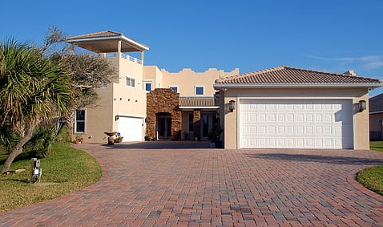

Concrete Driveways In Melbourne: Everything You Need To Know
Concrete driveways provide cost-effective options for driveway and patio construction. They can also provide a sleek, modern look to your home. With a proper installation, they can also provide a cost-effective solution to driveway and patio maintenance.
It is a simple fact that many people like to drive on concrete driveways. While the benefits of having driveways paved over with a beautiful layer of concrete are many, the downside to that is that you need to worry about the upkeep of your driveway. Keep them in good condition, and your drive will last forever.
What is a concrete driveway in Melbourne?
Let's not let this get too complicated. The concrete driveway is one of the highest quality materials to use- concrete. A concrete driveway is known for its elegance, its low maintenance, and its durability.
Versatile
Concrete driveways can be as classic or classic as any other type of driveway yet can also be skillfully designed and styled in numerous unique ways. Over the past decade, one of the most popular methods of concrete driveway design has been concrete stamping. A lot of businesses as well as house owners have taken advantage of this method of driveway design due to the beautiful look. An attractive and durable design is added to the driveway by concrete stamping.
Low maintenance
The absence of maintenance will make your concrete driveway in Melbourne last a really long time. If you are thinking of applying for concrete driveway sealant to seal the currently installed concrete, keep in mind that it will not fix all cracks.

Durable
Have you ever wondered why the term concrete jungle is coined? Since most tall buildings in the world are made from concrete, it's been there for more than 100 years. Concrete is quite durable, so even in typhoons and earthquakes it is extremely secure. Willn the street, it is cared for, inviting you in and protecting your life.
Process of concrete driveway preparation
To guarantee a concrete driveway is constructed properly, thorough preparation is necessary prior to installation. It may be necessary to follow and execute every step of the process to ensure a successful outcome. Preparing a concrete driveway is not as complicated as other types of driveways, but several steps are necessary.
Planning
Planning reduces the risk of problems that can develop during the development process. Here are some important components of the planning process:
Driveway size
The ideal size of a single-car driveway is eight to 15 feet by 18 feet. Also consider the dimensions of the initial entry approach. If it's wide enough, then more area for parking may be added. The planning process should also include the opportunity to add a concrete patio or porch if it can be accommodated.
Driveway thickness
Parking on a standard driveway is usually restricted to 4 inches. However, if you have vehicles such as a van, a bus, or truck that are bigger than or heavier than a sedan, you'll need to extend the driveway by approximately 5 inches.
Design
As mentioned, part for a concrete driveway in Melbourne is its adaptability. In the planning stages, it's important to make a decision relating to whether you desire traditional or decorative concrete. If you select the latter, let the concreters know about the pattern or design you'd like to be used.
Use of High-Quality Concrete
Ordering for the best and top quality concrete is vital. The grade of the concrete used will influence the durability of the driveway, its levels of matter, and enduringness. Narrow these specifications for a concrete driveway repair job in order to stay on track.
Practicality
Where it can last longer than asphalt is understood, it results in far less maintenance cost over time. It may cost more to design this driveway initially than an asphalt driveway, but it lasts a lot longer and rebuilds the budget. Asphalt is cheaper but is much less durable, requiring more future maintenance.
Conclusion
In conclusion, concrete driveways in Melbourne have a long history. In the early years of European settlement, homes built in Australia were made from wood, clay or a combination of the two. In the 19th century, people began building homes from bricks, a material that has been used to build homes in Melbourne for centuries. Concrete driveways in Melbourne are just one of the many types of driveways that people have used to give access to their homes.